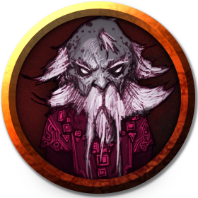

Um derro macho, Buppido é surpreendentemente sociável a comunicativo, demonstrando uma mente afiada e maneiras desarmantes. Esta agradável fachada esconde a alma de um assassino insano. Buppido secretamente acredita que ele é a encarnação viva do deus derro Diinkarazan – um avatar do assassinato oferecendo sacrifícios de sangue para criar um caminho de carnificina através do Subterrâneo para que seu povo possa seguir à glória. Ele racionaliza quaisquer contratempos (incluindo sua captura e aprisionamento) como parte de seus “planos divinos”. Suas mortes são cuidadosamente ritualísticas, seguindo um exigente processo de abrir suas vítimas e rearranjar seus órgãos. Apesar de louco, Buppido é sagaz e capaz de esconder sua verdadeira natureza a fim de servir a seus objetivos. Por acreditar ser seu próprio deus, ele está convencido que não pode ser morto (ou ao menos de que a morte de sua forma mortal não significa nada para ele), logo, ele é completamente destemido. Ele assume que tudo é parte de seu plano divino, e participa entusiasmado de qualquer plano. Buppido está satisfeito em considerar seus colegas como aliados até que chegue o momento em que ele não precise mais deles, ou até que ele se convença de que os agouros apontam que um ou mais deles precisem ser sacrificados para sua glória.
Tudo que Buppido faz, é visando ascender como o deus derro que é. Para isso, precisa cumprir diversas missões.
Eles possuem presença maligna. Não posso permitir, irei purificá-los! Mas, Fane Aurel não me deixaria fazer isso, então preciso cuidar dele primeiro...
Buppido possui muitas artimanhas mágicas, e acredita que forjar sua própria morte seja uma de suas missões divinas. Fazer isso é parte de seu plano.
"Eu sou um deus, criatura ridícula!"
"Ele tem cheiro de enxofre! Ele está ligado a algo maligno! Irei eliminá-lo!"
"Sempre que tento me aproximar de Fane Aurel, ela me olha com atenção. Espero que essa anã não se intrometa nos planos divinos de Diinkarazan!"
"Sinto muito, grandalhão, vai doer mais que você que em mim!"
"Tentou apostar minha lâmina! No final de tudo isso, quando finalmente ascender, irei fazê-lo se arrepender pela petulância!"
"Esse monte de carne me parece a marionete ideal! Tenho planos pra você, grande Ront! Escolha certa é uma ova."
"Elfo espertinho, continue confiando nesses mortais otários e verá o que o aguarda."
"Pare de tentar entender minha mente, cogumelo maldito!"
"Morte rápida e justa a ambos. Não possuem a classe necessária para irem a Nelrindenvane."
"Sua sabedoria seria bem vinda no Conselho de Nelrindenvane."